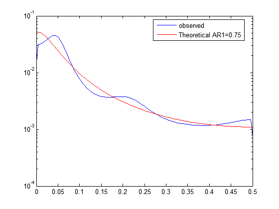
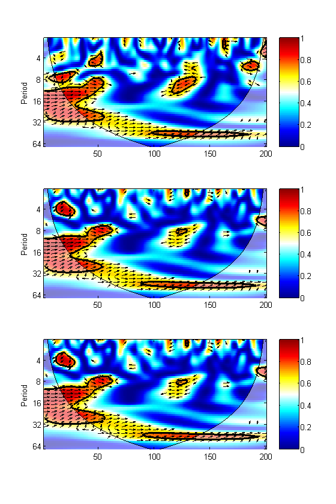
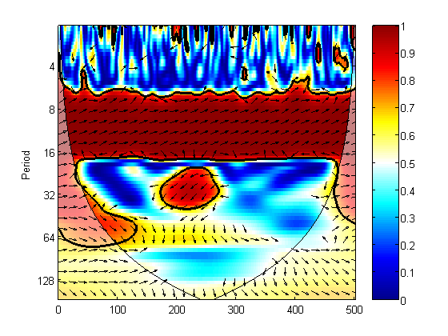
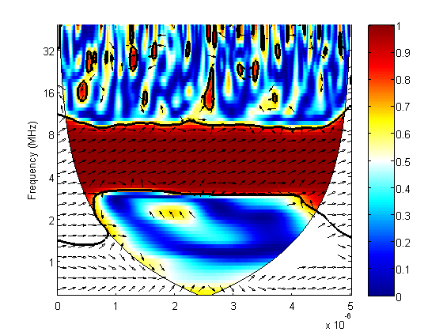

FAQ
Frequently Asked Questions for the Wavelet Coherence Matlab Toolbox
Contents
- How do I know whether AR1 noise is an appropriate null hypothesis to test against?
- When is the probability distribution of the data important?
- How important is the AR1 coefficient for WTC significance levels?
- What does a peak in XWT tell?
- How should the phase arrows be interpreted?
- How do I convert a phase-angle to a time lag?
- How do I calculate the average phase angle?
- How do I determine if a point is inside the COI or not?
- How do I avoid the slow Monte Carlo significance test in wtc?
- How do I change the Y-axis to frequency instead of period?
- Why is something missing from my figures on screen or when I try to save them?
- Copyright notice
How do I know whether AR1 noise is an appropriate null hypothesis to test against?
It is usually an appropriate null hypothesis if the theoretical AR1 spectrum is ‘a good model’ for the power decay in the observed spectrum. I recommend to simply visually compare the two power spectra:
X=rednoise(200,.8); [P,freq]=pburg(zscore(X),7,[],1); aa=ar1(X); Ptheoretical=(1-aa.^2)./(abs(1-aa.*exp(-2*pi*i*freq))).^2; semilogy(freq,P/sum(P),freq,Ptheoretical/sum(Ptheoretical),'r'); legend('observed',sprintf('Theoretical AR1=%.2f',aa),'location','best')
When is the probability distribution of the data important?
The null-hypothesis in the significance tests for WT, XWT and WTC is normally distributed AR1 noise. The AR1 coefficient and process variance is chosen so that it best fits the observed data. It is therefore quite important that the data is close to normal and is reasonably well modeled by a Gaussian AR1 process. Otherwise we can trivially reject the null-hypothesis and the significance level calculated by the program is not appropriate. However, the Central Limit Theorem tells us that the distribution tends towards normality as we convolute with longer and longer wavelets (in the absence of long-range persistence). This means that the data distribution is only really important on the shortest scales. So, if we are primarily looking at longer scales we do not need to worry so much about the distribution. However, for the WT and XWT the color of the noise is very important and a very non-normal distribution will affect the performance of the ar1 estimators (ar1.m & ar1nv.m). The WTC is relatively insensitive to the colour of the noise in the significance test (see next question).
How important is the AR1 coefficient for WTC significance levels?
The definition of Wavelet coherence (WTC) effectively normalizes by the local power in time frequency space. Therefore WTC is very insensitive to the noise colour used in the null-hypothesis (see Grinsted et al. 2004). It can easily be demonstrated by example:
figure('color',[1 1 1]) set(gcf,'pos',get(gcf,'pos').*[1 .2 1 2]) %make high figure X=randn(200,1); Y=randn(200,1); subplot(3,1,1); orig_arcoefs=[ar1(X),ar1(Y)] wtc(X,Y) subplot(3,1,2); X2=smooth(X,7); Y2=smooth(Y,5); smoothed_arcoefs=[ar1(X2),ar1(Y2)] wtc(X2,Y2) %make the input data more red, by moving averages of the data. subplot(3,1,3); wtc(X2,Y2,'ar1',[0 0]) %Test the red series against white noise.
orig_arcoefs =
0.038365 0.058916
smoothed_arcoefs =
0.84525 0.79124
 The three figures are very similar.
What does a peak in XWT tell?
You have to be very careful interpreting XWT peaks. If you take the WTC of a signal with pure white noise then the XWT will look very similar to the WT of the signal. The same problem exists in ‘normal' power spectral analysis. If you calculate the cross Power spectral density of a periodic signal with a white noise signal then you will get a peak. It does not mean that the series have any kind of connection just because there is a peak. I recommend examining the WTC and the phase arrows. If there is a connection then you would expect the phenomena to be phase-locked – i.e. that the phase-arrows point only in one direction for a given wavelength. So, if they vary between in-phase and anti-phase then it is a clue that they probably not are linked.
How should the phase arrows be interpreted?
The phase arrows show the relative phasing of two time series in question. This can also be interpreted as a lead/lag. How it should be interpreted is best illustrated by example:
figure('color',[1 1 1]) t=(1:200)'; X=sin(t); Y=sin(t-1); %X leads Y. xwt([t X],[t Y]); % phase arrows points south east

Phase arrows pointing * right: in-phase * left: anti-phase * down: X leading Y by 90° * up: Y leading X by 90°
Note: interpreting the phase as a lead(/lag) should always be done with care. A lead of 90° can also be interpreted as a lag of 270° or a lag of 90° relative to the anti-phase (opposite sign).
How do I convert a phase-angle to a time lag?
This can not always be done and when it can, it should be done with care. A 90° lead might as well be a 90° lag to the anti-phase. There is therefore a non-uniqueness problem when doing the conversion. A phase angle can also only be converted to a time lag for a specific wavelength. This equation works best for determining the time lag when the series are near in-phase.
wavelength=11; phaseangle=20*pi/180; timelag=phaseangle*wavelength/(2*pi)
timelag =
0.61111
A visual inspection of the time series at the wavelength in question should make it clear if the time lag is right. I also recommend calculating the time lag with other methods for support.
How do I calculate the average phase angle?
You can use anglemean.m provided with the package. Here is a small example that calculates the mean angle at the period closest to 11:
t=(0:1:500)';
X=sin(t*2*pi/11)+randn(size(t))*.1;
Y=sin(t*2*pi/11+.4)+randn(size(t))*.1;
[Wxy,period,scale,coi,sig95]=xwt([t X],[t Y]);
[mn,rowix]=min(abs(period-11)); %row with period closest to 11.
ChosenPeriod=period(rowix)
[meantheta,anglestrength,sigma]=anglemean(angle(Wxy(rowix,:)))
ChosenPeriod =
11.032
meantheta =
-0.39996
anglestrength =
0.99935
sigma =
0.03615
If you want to restrict the mean to be calculated over significant regions outside the COI then you can do like this:
incoi=(period(:)*(1./coi)>1); issig=(sig95>=1); angles=angle(Wxy(rowix,issig(rowix,:)&~incoi(rowix,:))); [meantheta,anglestrength,sigma]=anglemean(angles)
meantheta =
-0.39873
anglestrength =
0.99933
sigma =
0.036747
How do I determine if a point is inside the COI or not?
Here is an example that does just that:
t=(0:1:500)'; X=sin(t*2*pi/11)+randn(size(t))*.1; [Wx,period,scale,coi,sig95]=wt([t X]); incoi=period(:)*(1./coi)>1; p=[100 64; 100 10; 50 64]; %are these points in the COI? ispointincoi=interp2(t,period,incoi,p(:,1),p(:,2),'nearest')
ispointincoi =
0
0
1
How do I avoid the slow Monte Carlo significance test in wtc?
You can do that by simply specifying the MonteCarloCount to be zero. Example:
figure('color',[1 1 1]) t=(0:1:500)'; X=sin(t*2*pi/11)+randn(size(t))*.1; Y=sin(t*2*pi/11+.4)+randn(size(t))*.1; wtc([t X],[t Y],'mcc',0); %MCC:MonteCarloCount
Note that the significance contour can not be trusted with out running the Monte Carlo test.
How do I change the Y-axis to frequency instead of period?
Here is a short example that does just that. The sampling frequency is 100 MHz, and the signal is 5Mhz.
figure('color',[1 1 1]) t=(0:1e-8:500e-8)'; X=sin(t*2*pi*5e6)+randn(size(t))*.1; Y=sin(t*2*pi*5e6+.4)+randn(size(t))*.1; wtc([t X],[t Y]) freq=[128 64 32 16 8 4 2 1]*1e6; set(gca,'ytick',log2(1./freq),'yticklabel',freq/1e6) ylabel('Frequency (MHz)')

Why is something missing from my figures on screen or when I try to save them?
This is usually caused by an incompatibility bug between Matlab and your graphics driver? There is unfortunately not any single method to resolve this issue, since it depends on your system. However, the problems can in some cases be resolved by changing the renderer property on the figure. In some cases it is caused by the shaded rendering of the COI. Here are some options you may try
set(gcf,'renderer','painters'); set(gcf,'renderer','zbuffer'); set(gcf,'renderer','opengl'); set(findobj(gca,'type','patch'),'alphadatamap','none','facealpha',1)
Further reading on how to resolve this issue: http://www.mathworks.com/access/helpdesk/help/techdoc/index.html?/access/helpdesk/help/techdoc/ref/opengl.html http://www.mathworks.com/support/solutions/data/28724.shtml http://www.mathworks.com/access/helpdesk/help/techdoc/ref/figure_props.html http://lists.freebsd.org/pipermail/freebsd-questions/2005-July/093319.html http://newsreader.mathworks.com/WebX?14@5.hjGuax06Ca1.0@.eeeb312
Copyright notice
Copyright (C) 2002-2004, Aslak Grinsted
This software may be used, copied, or redistributed as long as it is not sold and this copyright notice is reproduced on each copy made. This routine is provided as is without any express or implied warranties whatsoever.